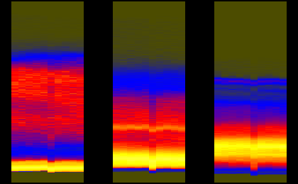
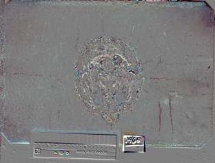
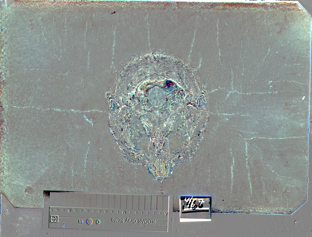
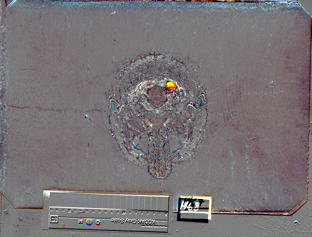
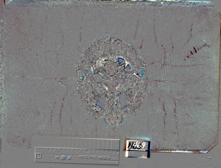
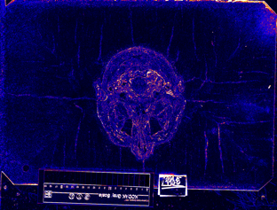
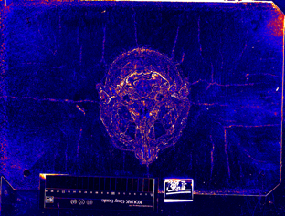
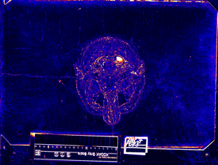
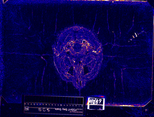

|

|

| |||
| teem | / | nrrd | / |
Visible Female |
Image Differences |
As yet another way of looking at the brightness variation problem, per-pixel image differences are also interesting. They have less ability to characterize the brightness differences than do the joint histograms, but they also provide some contextual clues about the nature of the brightness variations. In the previous pages on the gray scale strips and joint histograms, four locations in the head were chosen for their evidence (and non-evidence) of the brightness problem. This page looks at successive pairs of images from those four locations, in conjuction with closer inspection of the axis histograms.
cat > cmap2.txt 0 0 0 0 0 1 1 0 0 1 1 0 1 1 1 (Ctrl-D) alias sliceprep "unu make -i - -t uchar -s 2048 1216 3 -e raw | unu permute -p 2 0 1 | unu crop -min 0 260 30 -max M 1820 M" alias shrink "unu resample -s = x0.2 x0.2 -k cubic:0,0.5" alias cquant "unu quantize -b 8 -min -30 -max 30" alias nquant "unu project -a 0 -m L2 | unu rmap -m cmap2.txt -min 0 -max 60 | unu quantize -b 8" alias histaxzoom "unu pad -min 0 -2 -2 0 -max M M+2 M+2 M -b pad -v 0 | unu permute -p 0 1 3 2 | unu reshape -s 3 42 260 | unu resample -s = x10 = -k box"
In the third case, the Kodak card has not moved, and the pattern on the difference images suggest that something changed on the surface itself, rather than the lighting, which would explain why the Kodak card completely failed to capture the brightness variation visible inside the head. Based on this, I did difference images for another set of images around an isolated dark slice, the one that goes through the nose, but closer to the tip than the previous dark slice. Slice indices and names are:
459: avf1154a.raw.Z 460: avf1154b.raw.Z 461: avf1154c.raw.Z 462: avf1155a.raw.Z 463: avf1155b.raw.Z
unu join -i histax{R,G,B}.ppm -a 3 | unu crop -min 0 456 0 0 -max M m+9 M M \
| histaxzoom | topng doc/hist5.png
zcat data/avf1154a.raw.Z | sliceprep -o 0.ppm
zcat data/avf1154b.raw.Z | sliceprep -o 1.ppm
zcat data/avf1154c.raw.Z | sliceprep -o 2.ppm
zcat data/avf1155a.raw.Z | sliceprep -o 3.ppm
zcat data/avf1155b.raw.Z | sliceprep -o 4.ppm
unu 2op - {0,1}.ppm -t int | cquant | shrink | topng doc/diff5CA.png
unu 2op - {1,2}.ppm -t int | cquant | shrink | topng doc/diff5CB.png
unu 2op - {2,3}.ppm -t int | cquant | shrink | topng doc/diff5CC.png
unu 2op - {3,4}.ppm -t int | cquant | shrink | topng doc/diff5CD.png
unu 2op - {0,1}.ppm -t int | nquant | shrink | topng doc/diff5NA.png
unu 2op - {1,2}.ppm -t int | nquant | shrink | topng doc/diff5NB.png
unu 2op - {2,3}.ppm -t int | nquant | shrink | topng doc/diff5NC.png
unu 2op - {3,4}.ppm -t int | nquant | shrink | topng doc/diff5ND.png
|  | |||
| hist5.png: Segments of the red, green, and blue axis histograms, for Z slices 456 to 465. | |||
|  |  |  |  |
| diff5CA.png | diff5CB.png | diff5CC.png | diff5CD.png |
|  |  |  |  |
| diff5NA.png | diff5NB.png | diff5NC.png | diff5ND.png |